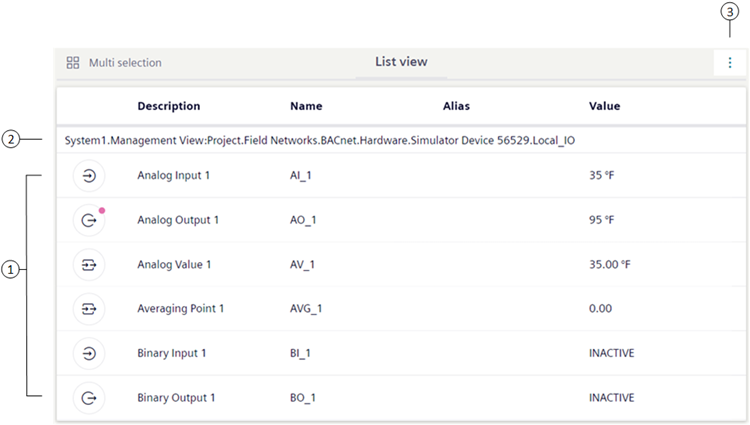
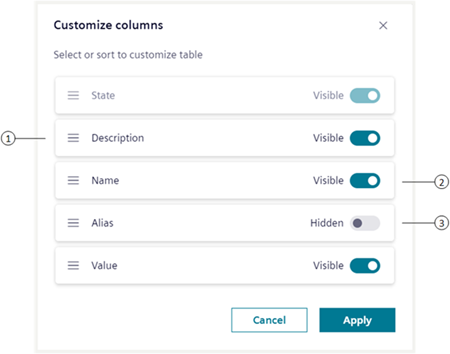

List View
List View displays the details for one or more objects in the building control system. For example, after you select one object from System Browser, List View displays properties in tabular form.
For procedures or workflows, see the step-by-step section.
You can sort the columns by selecting , which displays the Customize Columns dialog. In the Customize Columns dialog, you are able to:
- Hide or unhide a column
- Reorder columns
List View Workspace

1 | Object Names | Displays a list of children objects in the parent node. |
2 | Heading Path | Displays the location of the object in the building control system. |
3 | Customize Columns | Displays the Customize Columns dialog box for customizing views. |
Customize Columns Dialog

| Name | Description |
1 | Selection handle | Allows you to drag and drop to alter column order, except for the State column—which is always displayed and always the leftmost column. |
2 | Switch on | Displays a column |
3 | Switch off | Hides a column |
About Primary Selections
Making a new primary selection in List View is an efficient alternative to manually scrolling through the System Browser tree to look for an item. It is also quicker than performing a formal search for an object using the Search feature.